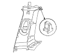

Sustitución de componentes del SRS / Inspección después del despliegue
|
NOTA: Antes de efectuar ningún tipo de reparación en el SRS, utilice el método del menú del SRS del HDS para comprobar los DTC; consulte el Índice de localización de averías de los DTC para aquellas piezas cuyo despliegue resulte menos obvio (tensores de los cinturones de seguridad, sensores de impacto delanteros, sensores de airbag laterales, etc.).
Después de una colisión en la que se haya producido el despliegue de los tensores del cinturón de seguridad, sustituya estas piezas:
Después de una colisión en la que se haya producido el despliegue de los tensores de la hebilla del cinturón de seguridad, sustituya estas piezas:
Después de una colisión en la que se haya producido el despliegue de un (de los) airbag(s) delantero(s), sustituya estas piezas:
Después de una colisión en la que se haya producido el despliegue de un (de los) airbag(s) lateral(es), sustituya estas piezas:
Después de una colisión en la que se haya producido el despliegue de un (de los) airbag(s) de cortina lateral(es), sustituya estas piezas:
Después de una colisión de moderada a fuerte o una colisión trasera, busque cualquier tipo de daño en el airbag de cortina lateral o en sus componentes. En función de la magnitud de los daños, sustituya los componentes según la necesidad.
Durante el proceso de reparación, inspeccione estas zonas:
Una vez reparado el vehículo de forma completa, gire la llave de contacto a la posición ON (II). El SRS está correcto si su luz testigo se enciende durante 6 segundos y se apaga luego. Si la luz testigo no funciona debidamente, utilice el Método del menú del SRS del HDS para efectuar la lectura del(de los) DTC(s). Su aún así tampoco puede recuperar los códigos, vaya a la Localización de averías del circuito de la luz testigo del SRS.
|
El guarnecido del pilar delantero

El guarnecido del pilar central

El guarnecido del pilar trasero

|

|

|
|

|
|

|